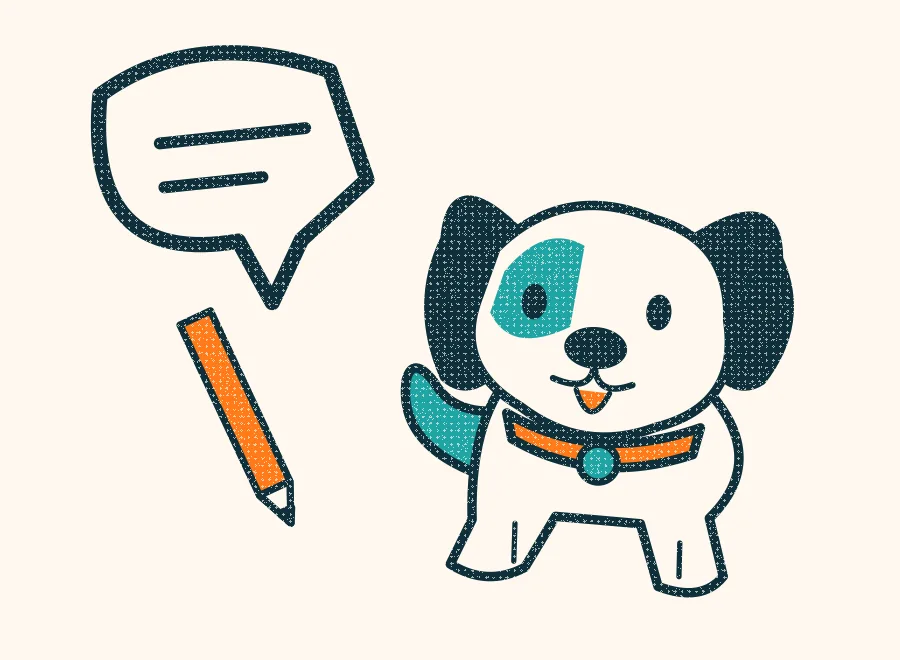

03 / DAS FANZINE
WIE ALLES
ANFING.
Eine erfundene Geschichte über drei Kreative, einen Hund und eine ziemlich gute Idee.
Kapitel 01 / Die erste Idee
Die Geschichte von Pfotenpixel beginnt in einem kleinen Hamburger Zeichenatelier. Die fiktiven Freunde Juna, Mika und Sam treffen sich dort regelmäßig zum Zeichnen und Spielen. Eines Abends merken sie, dass viele ihrer Freund:innen bei Veranstaltungen immer dieselbe Entscheidung treffen müssen: mit dem Hund zu Hause bleiben oder die gemeinsame Freizeit anders organisieren. Warum nicht eine Messe schaffen, die beide Interessen zusammenbringt?
Sie sammeln alte Comic-Hefte, entwerfen kleine Spielkarten und kleben die ersten Entwürfe mit Papierstreifen zusammen. Pixel, der neugierige Atelierhund, wird zur Hauptfigur ihres ersten selbstgemachten Hefts. Seine Pfote in einer Sprechblase wird zum Zeichen für eine Veranstaltung, bei der auch Vierbeiner ihren Platz haben.
Kapitel 02 / Das Rudel

Juna / Comics & Druck
Juna entwickelt die Zine-Werkstatt und lädt unabhängige Zeichner:innen ein. Sie mag sichtbare Druckspuren und Geschichten, die nicht perfekt sein müssen.
Mika / Spiele & Tische
Mika sucht zugängliche Spiele aus und erklärt Regeln so, dass auch Neulinge schnell mitspielen können.
Sam / Pfoten & Planung
Sam plant Wege, Wasserstellen und Rückzugsmöglichkeiten. Pixel ist das Maskottchen, nicht der Maßstab für jeden Hund.
Kapitel 03 / Unser Manifest
Pfotenpixel steht für unabhängige Kultur, Neugier und Rücksicht. Unsere Gestaltung erinnert an kopierte Fanzines: grobe Raster, bewusst versetzte Farbe, ausgeschnittene Formen und sichtbare Papierstruktur. Die Pfoten-Sprechblase verbindet Comic und Hund in einem eigenen Symbol. Die Veranstaltung selbst ist erfunden und dient als Studienprojekt der Kunstschule Wandsbek.
Das nächste Kapitel